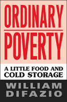

A biting chronicle of the life of the working poor in the wake of welfare reform
A biting chronicle of the life of the working poor in the wake of welfare reform


 A biting chronicle of the life of the working poor in the wake of welfare reform
A biting chronicle of the life of the working poor in the wake of welfare reform

|  |
Ordinary PovertyA Little Food and Cold StorageWilliam DiFaziopaper EAN: 978-1-59213-458-8 (ISBN: 1-59213-458-0) |
"The heart and soul of Ordinary Poverty is the ethnography of St. John's Bread and Life soup kitchen. The greatest strength of the book, however, is the way in which DiFazio's text moves seamlessly from ethnography to high social theory and back again, in chapter after chapter of poignant prose and provocative analysis."
—Jonathan Cutler, Wesleyan University
At St. John's Bread and Life, a soup kitchen in the Bedford-Stuyvesant section of Brooklyn, more than a thousand people line up for breakfast and lunch five days a week. During the twelve-year era of welfare reform, William DiFazio observed the daily lives of poor people at St. John's and throughout New York City.
In this trenchant and groundbreaking work, DiFazio presents the results of welfare reform—from ending entitlements to diminished welfare benefits—through the eyes and voices of those who were most directly affected by it. Ordinary Poverty concludes with a program to guarantee universal rights to a living wage as a crucial way to end poverty. Ultimately, DiFazio articulates the form a true poor people's movement would take—one that would link the interests of all social movements with the interests of ending poverty.
Excerpt available at www.temple.edu/tempress
"Bill DiFazio's powerful and prophetic voice is badly needed in our time. Don't miss it!"
—Cornel West, University Professor of Religion, Princeton University
"A vivid portrait of poverty in the U.S. and its roots in contemporary politics and policy. We see and hear the people who are down and out, and the people who reach out to help them. More than that, DiFazio gives us a compelling theoretical analysis of why poverty worsens and how this trend might be reversed."
—Frances Fox Piven, Distinguished Professor of Political Science and Sociology, Graduate School of the City University of New York
"This is a book written by a frustrated and angry man [who] spent nearly 20 years working as a volunteer in the Bread and Life soup kitchen...[it] is an attempt to make sense of that experience.... DiFazio does not have all the answers. But he asks the right questions and puts poverty and hardship back at the centre of discussion. He challenges us to face up to our responsibility to act. Inequality and low wages are key issues which have been ignored for too long—in Britain as in America."
—The Tribune (UK)
“DiFazio provides the theoretical and ideological framework of global capitalism and its relations to global and local poverty, and explores the ways to build a social movement to end poverty in the richest country in the world. His book should be read by political leaders, social scientists, and administrators of antipoverty organizations. Summing Up: Recommended.”
—Choice
"[DiFazio] has made a clear critique of current poverty theories, policies, and responses...this is a provocative and illuminating synthesis that urges students, scholars, researchers, advocates, activists, and policymakers to think and act outside our current poverty definitions, theories, and policies, the structure of our advocacy and helping organizations, and the overall national and global economy in which these are set."
—Contemporary Sociology
"The book presents a cogent analysis of poverty gleaned in part from the author’s work at St. John’s Bread and Life soup kitchen in Brooklyn. His interviews, observations, and social analysis powerfully rebut those social theorists and politicians who argue that people are poor out of cultural or personal inferiority."
—Socialism and Democracy
"Ordinary Poverty is an astute book that stands out from most of the work that is published on poverty and anti-poverty activism. It is far better theoretically informed than most of that work and its dual emphasis...provides the likely demands for a rejuvenated anti-poverty movement headed by the poor."
—Labour/Le Travail
“DiFazio offers an outraged exegesis of the exacerbation of poverty amid an economic boom that has increased the wealth of only the richest….[H]is ethnographic contribution [is] strongest in his description of the travails of long-term social service provision in the late 1980s and into the 1990s.”
—The American Journal of Sociology
"This estimable book is at once an ethnographic account of the author's experiences from 1988 to 2001 as a volunteer field worker for the St. John's Bread and Life soup kitchen in the Bedford-Stuyvesant neighborhood in Brooklyn.... DiFazio's proposals for solving the problem of poverty in the United States are not new...but they acquire a fresh relevance.... One of the strengths of this book is its vivid portraits of the people whose poverty has become 'ordinary' inasmuch as present-day capitalist America looks upon their existence as a normal part of the social fabric.... Ordinary Poverty is an impassioned, politically engaged, intellectually challenging study of one of the central unresolved problems of American social and political life."
—Science & Society
"DiFazio's argument is powerful…. [T]his book is important for several reasons. First, for those unfamiliar with the “poverty” literature, it reviews and criticizes it well. Second, it gives a different human face to the “poverty” world – a more nuanced face. Third, it posits a solution of sorts that will call for a redefinition of work and value, which is of significant interest to researchers and policy makers…. Perhaps DiFazio's work will inspire a forum in these and other pages about a series of realistic utopias about what a world without poverty might be."
—Anthropology of Work Review
Acknowledgments
1. Introduction: Ordinary Poverty
2. Soup Kitchen Blues: 1988-1993
3. Beggars Can't Be Choosers: 1993-2000
4. The Dialectic of Sister Bernadette: The Limits of Advocacy
5. Forgetting Poverty: A Seder for Everyone
6. Conclusion: Making Poverty Extraordinary
Notes
Index
 | William DiFazio is Professor of Sociology at St. John's University. He is the author of Longshoremen: Community and Resistance on the Brooklyn Waterfront and co-author (with Stanley Aronowitz) of The Jobless Future: Sci-Tech and the Dogma of Work. |
Political Science and Public Policy
Sociology
Anthropology
Labor in Crisis, edited by Stanley Aronowitz.
The hope for a revived progressive movement in American politics and culture depends to a large extent on the possibility of a revived labor movement. This series will stimulate debate and discussion about the state of the American labor movement and its relation to the future of America by publishing short, provocative books that offer varying analyses and prescriptions for labor's revival as well as diverse assessments of its prospects. Books in the series will be relevant to a vision of the labor movement that presupposes movements and people who care about the chances of more equality, more democratic participation in the institutions of political and social life, and more power for those traditionally excluded from economic and political decision making.
© 2015 Temple University. All Rights Reserved. This page: http://www.temple.edu/tempress/titles/1674_reg.html.